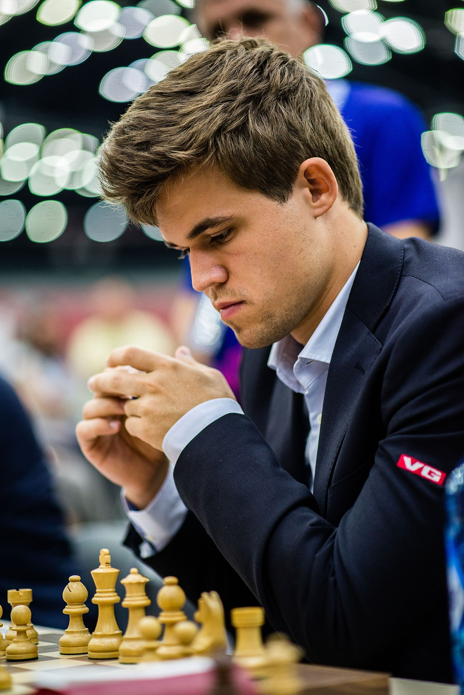

| Rank | Name | Ratings | country |
|---|---|---|---|
| 1 | Magnus Carlsen (world champion) | 2882 | norway |
| 2 | Garry Kasparov | 2851 | Russia |
| 3 | Fabiano Caruana | 2844 | Italy |
| 4 | Levon Aronian | 2830 | Amernian |
| 5 | Wesley so | 2822 | Philippines |
| 6 | Shakhriyar Mamedyarov | 2820 | Azerbaijan |
| 7 | Maxime Vachier-lagrave | 2819 | France |
| 8 | Vishwanathan Anand | 2818 | India |
| 9 | Vladmir Kramnik | 2817 | Russia |
| 10 | Hikaru nakamura | 2817 | America |
Magnus Carlsen born 30 November 1990[1][2]) is a Norwegian chess grandmaster who is the current World Chess Champion,World Rapid Chess Champion,and World Blitz Chess Champion.Carlsen first reached the top of the FIDE world rankings in 2010,and trails only Garry Kasparov in time spent as the highest rated player in the world. His peak classical rating of 2882 is the highest in history.
 He is considered to be one of the greatest players of all time.A chess prodigy, Carlsen achieved second place in the World U12 Chess Championship in 2002.At age 15,he won the Norwegian Chess Championship.He surpassed a rating of 2800 at age 18 and reached number one in the FIDE world rankings aged 19,becoming the youngest person ever to achieve those feats.Carlsen became World Chess Champion in 2013 by defeating Viswanathan Anand.In the following year,he retained his title against Anand,and won both the 2014 World Rapid Championship and World Blitz Championship, thus becoming the first player to hold all three titles simultaneously,a feat he repeated in 2019.He defended his classical world title against Sergey Karjakin in 2016,and against Fabiano Caruana in 2018.He has stated the middlegame is his favourite part of the game as it "comes down to pure chess".His positional mastery and endgame prowess have drawn comparisons to those of former World Champions Bobby Fischer, Anatoly Karpov, José Raúl Capablanca, and Vasily Smyslov."there are no fortresses"-Magnus carlsen